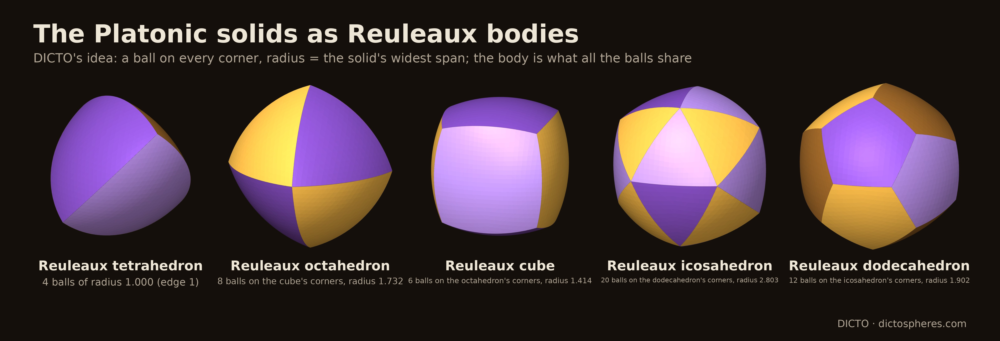

Theorem: with a ball as wide as the solid on every corner, the body is thinnest across a diameter, width 1, and thickest through a face, width exactly 2√(3/4 + r²) − 2r, so dual pairs agree exactly
Version 3.1 corrects the wording of a note; no result changes.
Version 3 adds Theorem 2: the largest width of the bodies on the dodecahedron, icosahedron, cube and octahedron is the face-axis width (Conjecture 1 proved for these four, by an exact case analysis of the boundary); Proposition 1: the corners of each of these bodies are exactly its face-axis points, one beyond each face of the solid; Corollary 4: dual pairs have the same width range; and the text revised for greater clarity.
Version 2 adds a short opening explanation (in italics) to each result, its proof and the conclusion; the mathematics is unchanged.

What is shown. This paper determines exactly the thinnest and the thickest width of each of DICTO's five bodies and why they come in matching pairs: thinnest across a diameter, thickest through a face. The first part (§§1–2) proves the main theorem: the thinnest width and the width through a face. The second (§4) shows that no direction is thicker than the face axis. The third (§5) explains the look: why each body wears the face pattern of the partner solid.
For a Platonic solid S with corner set X and diameter D (its widest span), DICTO's body is B = ∩v∈X B(v, D), the common part of the closed balls of radius D centred on the corners; in the language of [1, 2] it is a ball polyhedron. For the tetrahedron D is the edge and B is the Reuleaux tetrahedron [2, 3]. For the dodecahedron, icosahedron, cube and octahedron D is twice the circumradius R: the widest spans join opposite corners. All lengths are at D = 1. The width of B in a direction u is the distance between the two planes at right angles to u that touch B.
Picture a ball on every corner of a Platonic solid, each ball just large enough to reach the farthest corner. The space all the balls share is a rounded body. On the tetrahedron this is the famous Reuleaux tetrahedron; building the same body on all five Platonic solids, as one family, is DICTO's idea, and the other four did not appear in the sources we checked. The theorem says how thick that body is: never thinner than the solid itself is wide, and, measured straight through the middle of a face, exactly a number we can write down.
Why it is never thinner: a rounded body of the same thickness in every direction fits inside it, and nothing can be thinner than a body it holds.
(i) By Pál's theorem, as cited in [2], the corner set X (of diameter 1) lies in a body K of constant width 1. K has diameter 1 and contains X, so every point of K is within 1 of every corner: K ⊂ B, and every width of B is at least 1. Now let v, w be corners with |v − w| = 1 and u = v − w. B lies in the ball of radius 1 about w, so u·x ≤ u·w + 1 = u·v on B, and v lies in B (no two corners are more than 1 apart); so the largest value of u·x on B is u·v, and in the same way the smallest is u·w. The width is u·v − u·w = 1.
Why the face-axis thickness is exactly that number: by symmetry the outermost point lies on the axis itself, and it can reach only as far as the farthest corner's ball allows.
(ii) Let u be the unit vector to the face centre and hv = u·v the height of a corner v. The rotations of S about the axis (5-, 3-, 4- or 3-fold) map B to itself and fix u, so they map the set of points of B where u·x is largest to itself; that set is convex, and its centroid lies on the axis. So the largest value of u·x on B is reached at a point zu of the axis. Since |v|² = ¼, |zu − v|² = ¼ + z² − 2z hv, and for z > 0 this is largest where hv is smallest. The plane of the opposite face touches S, so every corner has hv ≥ −r, with equality exactly at the corners of that face. Hence zu lies in B exactly when ¼ + z² + 2zr ≤ 1, that is z ≤ √(3/4 + r²) − r. S and B are centrally symmetric, so the width is twice this. ∎
Verification. reuleaux_checks.py checks in exact arithmetic in ℚ(√5) that the diameter of each of the four is 2R, that every corner has height at least −r along a face axis with equality exactly at the opposite face, the values of (r/R)², and the closed forms below; numerically, the face-axis widths equal the largest widths found by widths.py, and the smallest width found is 1 for all five.
A solid and its partner, the dodecahedron with the icosahedron, the cube with the octahedron, give bodies exactly as thick as each other through their faces.
Corollary 1 (dual pairs). The width in (ii) depends only on r = ½ × (r/R), and dual solids have the same r/R; the exact checks find (r/R)² = (5 + 2√5)/15 for the dodecahedron and the icosahedron and (r/R)² = 1/3 for the cube and the octahedron. So the bodies on a dual pair have exactly the same face-axis width:
The tetrahedron gives the famous Reuleaux tetrahedron, and it follows its own rule: it is the near miss of the family.
Corollary 2 (the tetrahedron, the classical case). Part (ii) does not apply to the tetrahedron: its diameter is its edge, not twice its circumradius, and it is not centrally symmetric (opposite a face lies a corner, not a face), so the width along a face axis is not twice the height reached on one side. On the tetrahedron B is the classical Reuleaux tetrahedron [2, 3]. Along the axis through the midpoints of two opposite edges the argument of (ii) does work (a quarter turn followed by a reflection maps the tetrahedron to itself and reverses the axis): the opposite edges are 1/√2 apart and every corner is ½ from the axis, so the width there is 2√(3/4) − 1/√2 = √3 − √2/2 ≈ 1.024944 (checked exactly).
Despite their names, the four new bodies are not Reuleaux polyhedra in the strict mathematical sense.
Corollary 3 (not Reuleaux polyhedra). Hynd [3] and Montejano and Roldán-Pensado [2] call B(X) a Reuleaux polyhedron when X has the largest possible number of diametric pairs, 2m − 2 for m points (the Vázsonyi bound, proved by Grünbaum, Heppes and Straszewicz [3]), or, as Montejano and Roldán-Pensado define it following Sallee [2] (Sallee's paper [4] itself was not read), when the vertices of B are exactly the points of X. The tetrahedron has 6 = 2 × 4 − 2. The other four do not qualify (exact checks): their diametric pairs are only the opposite corners, 10, 6, 4 and 3, against 38, 22, 14 and 10; and each corner lies on the sphere of exactly one other ball (the opposite corner's), so it is not a vertex of B, where at least three spheres meet [2]. They are ball polyhedra, not Reuleaux polyhedra, and the smoothing of edge pairs that turns a Reuleaux polyhedron into a body of constant width [2, 3] does not apply to them as it stands. Where their vertices are instead is Proposition 1 below.
The face axis is also the thickest direction of all. Versions 1 and 2 of this paper found this by computer to twelve digits and left it as a conjecture; here it is proved.
Where it is thickest. A ball polyhedron bulges between its corners. It could be thickest through the middle of a face of the solid, across a curved edge where two balls meet, or through a point where several balls meet; the last two coincide with the first: the points where several balls meet lie exactly on the face axes, and nothing reaches farther out.
Why nothing is thicker: the body is the same seen from either side, so its thickness in any direction is twice how far it reaches from the centre. The farthest point of the body must sit on its surface, either inside a curved face, on a curved edge, or at a corner; the first two never hold the farthest point, and every corner lies on a face axis.
Proof of Theorem 2 and Proposition 1. First, the reduction. S, and so B, is centrally symmetric, so the width in the unit direction u is w(u) = h(u) + h(−u) = 2h(u), with h(u) the largest value of u·x on B; the largest width is therefore 2·max |x| over B. The function |x|² is convex, so its maximum on B lies on the boundary, at a point on exactly one sphere, on exactly two, or on three or more. Write R = ½ for the circumradius; every corner has |v| = R.
The second idea is one exact test. Lemma. If x lies on the sphere of the corner vi, then x lies in the ball of the corner vm exactly when x·(vm − vi) ≥ 0. Indeed |x − vm|² − |x − vi|² = −2x·(vm − vi), since |vm| = |vi|. On the points below this sign is the sign of a number in ℚ(√5), so membership in B, and every tie, is decided exactly.
Now the three cases. (1) One sphere. On the sphere of v the only local maximum of |x|² is x = v + D·v/|v|, at distance 2R + D from −v, outside the ball of −v: no farthest point lies inside a face. (2) Two spheres. On the circle where the spheres of vi and vj meet, |x|² = D² − R² + 2x·vi is linear in x, so its only local maximum on the circle is x = c + ρ·c/|c|, with c the circle's centre and ρ its radius. For an opposite pair vj = −vi the circle misses B altogether: by the Lemma a point of it in B would need x·v ≥ 0 for every corner v and for its opposite −v, so x·v = 0 for all corners, which span space. For every other pair the Lemma puts x = c + ρ·c/|c| outside B (exact). So no farthest point lies on an open edge of B. (3) Three or more spheres. All corners are at distance R from the centre, so the points at distance D from three corners vi, vj, vk lie on the line through the centre along (vj − vi) × (vk − vi): two points, on opposite sides. Over all triples these are finitely many candidates, and the Lemma sorts them exactly. Here is where the count is decided: in each of the four bodies, the candidates in B are exactly the face-axis points of Proposition 1 (dodecahedron: 120 triples meeting in 12 points; icosahedron: 20 triples, 20 points; cube: 24 triples meeting in 6 points; octahedron: 8 triples, 8 points). So the vertices of B are these points, which proves Proposition 1, and the farthest point of B is one of them. By (ii) of the main theorem each lies at distance √(3/4 + r²) − r from the centre; twice this is the face-axis width. ∎
Verification and near miss. item2_reuleaux_largest_width.py (study 2026-11-21-gaps-batch-c, item 2, with the exact ℚ(√5) arithmetic of q5.py) runs the three cases for each of the four solids; the candidate values, compared at 60 digits, all equal the face-axis value (largest |x| = 0.5554943277… and 0.6241957945… at D = 1, agreeing with √(3/4 + r²) − r to 40 digits), and they reproduce the largest widths 1.110988655456 and 1.248391589161 found by widths.py over 3000 random directions with local refinement from the six best. The Lemma is what bounds the answer: without it, the maxima on the cube's circles reach |x| ≈ 1.3657, more than twice the true 0.6242 (failing control, as expected).
So a solid and its partner give bodies whose thickness runs over exactly the same range.
Corollary 4 (width ranges of dual pairs). The bodies on the dodecahedron and on the icosahedron have the same width range, from 1 to (√(50 + 2√5) − √(5 + 2√5))/√15, and the bodies on the cube and on the octahedron the same range, from 1 to (√30 − √3)/3; so each dual pair has the same spread, largest over smallest width. Proof. Main theorem (i), Theorem 2 and Corollary 1. ∎
The tetrahedron. For the Reuleaux tetrahedron the largest width is the classical value √3 − √2/2, along the edge-midpoint axis of Corollary 2. We quote it and do not re-prove it here (it was not in the library sources checked; widths.py finds 1.024944026382, the same value to 12 digits). The proof above does not carry over: the Reuleaux tetrahedron is not centrally symmetric, so its width in a direction is not twice its reach.
Each body looks like the partner of the solid it came from, which is why DICTO named them by their look.
DICTO named the bodies by their look: balls on the dodecahedron's corners make the Reuleaux icosahedron, on the icosahedron's the Reuleaux dodecahedron, on the cube's the Reuleaux octahedron and on the octahedron's the Reuleaux cube. The names describe the look only: the bodies are not Reuleaux polyhedra (Corollary 3). The look is explained by the faces. The surface of B is made of one spherical face from each ball (as for Reuleaux polyhedra [3]), lying across the body from its centre. The checks sample, for every pair of balls, the circle where their spheres meet, and find (numerically) that two faces meet along an arc exactly when their centres are joined by an edge of S. So the faces of B correspond to the corners of S and meet as those corners are joined, which is how the faces of the dual solid meet: the balls on the cube's 8 corners give 8 faces meeting like the octahedron's, and so on. Proposition 1 agrees exactly: the corners of B sit one over each face of S, as the corners of the dual solid do.
Colouring the faces so that no two neighbours share a colour is therefore colouring the corners of S along its edges. The fewest colours, found by exhaustive search, are 3 for the Reuleaux icosahedron, 4 for the Reuleaux dodecahedron, 2 for the Reuleaux octahedron (the cube's corners split into two sets with no edge inside either), 4 for the Reuleaux tetrahedron (any two of its 4 faces meet) and 3 for the Reuleaux cube, as in Figure 1: the numbers DICTO read from the look, 3, 4, 2, 4, 3. The volumes (numerical, Table A1) include the tetrahedron check: Harbourne's formula 8π/3 + √2/4 − (27/4) arccos(1/3), as quoted by Hynd [3], and our quadrature 0.4221577 agree to 1.1 × 10−8.
The three library papers on these bodies [1, 2, 3] were searched in full for cube, octahedron, dodecahedron, icosahedron, Platonic and regular: the only regular solid they use is the regular tetrahedron or simplex (for the Reuleaux and Meissner tetrahedra, Hynd's pyramids and a lemma of [1]). Sallee's paper [4] is in the library as a link only and was not read. In the sources checked (the full text of the 81 library sources with a text layer listed in the appendix, searched on 21 October 2026; the library's 175 link-only entries, Sallee's among them, were not searched) we did not find the bodies on the other four Platonic solids or their widths.
Open question. The face pattern of §5 is observed numerically. With the corners of B now exact (Proposition 1), an exact proof that two faces of B meet along an arc exactly when their corners are joined by an edge of S would make the face patterns and the fewest colours exact.
Each of DICTO's bodies is thinnest across a diameter and thickest through a face, and a solid and its partner are exactly as thin and as thick as each other.
This paper gives:
In studies/2026-10-21-reuleaux-platonic: reuleaux_checks.py (log reuleaux-checks.log, 45 PASS, no FAIL), in two parts. Part A is exact (ℚ(√5) with Python fractions): the diameters, diametric pairs and the corners lying on one other sphere; the corner heights along a face axis; (r/R)² of each solid; the closed forms of the main theorem; and the tetrahedron's edge-midpoint axis. Part B is numerical (float64): the face-axis widths against widths.log, the volumes by radial Gauss–Legendre quadrature (N = 1000 and 2000 agree to within 6 × 10−7), the Reuleaux tetrahedron's volume against Harbourne's formula, and the arcs (7200 points on each circle, margin 10−9) with the fewest colours by backtracking. widths.py (widths.log): the width search. reuleaux_platonic.py and reuleaux_compose.py: the meshes (manifold3d), the colouring and Figure 1. In studies/2026-11-21-gaps-batch-c (item 2): item2_reuleaux_largest_width.py with q5.py (exact ℚ(√5) arithmetic with Python fractions), log item2.log ending FINAL ok: the three cases of the proof of Theorem 2 for each of the four solids, the candidates and their exact membership, the face-axis values against widths.log, and the failing control.
| Body (DICTO's name) | Balls on | Faces | Arcs | Diametric pairs (2m − 2) | Fewest colours | Width range | Volume ≈ |
|---|---|---|---|---|---|---|---|
| Reuleaux icosahedron | dodecahedron | 20 | 30 | 10 (38) | 3 | 1 .. 1.110989 | 0.57188 |
| Reuleaux dodecahedron | icosahedron | 12 | 30 | 6 (22) | 4 | 1 .. 1.110989 | 0.59679 |
| Reuleaux octahedron | cube | 8 | 12 | 4 (14) | 2 | 1 .. 1.248392 | 0.64940 |
| Reuleaux tetrahedron | tetrahedron | 4 | 6 | 6 (6) | 4 | 1 .. 1.024944 | 0.42216 |
| Reuleaux cube | octahedron | 6 | 12 | 3 (10) | 3 | 1 .. 1.248392 | 0.68764 |
Table A1. The five bodies at diameter 1, in the order dodecahedron, icosahedron, cube, tetrahedron, octahedron of the solid the balls are on. Faces: one per ball; arcs: pairs of faces meeting along an arc (numerical; equal to the solid's edges); diametric pairs: corner pairs at distance D, exact, with the bound 2m − 2 for m corners in brackets; fewest colours with no two neighbouring faces alike; width range: the minimum is proved (main theorem), the maximum is the face-axis width, proved to be the largest for the bodies on the dodecahedron, icosahedron, cube and octahedron (Theorem 2), and for the tetrahedron the classical value along the edge-midpoint axis (Corollary 2; quoted); all agree with the largest widths found numerically; volume by radial quadrature (numerical).
The library's manifests list 269 entries, of which 94 have a local file; these give the 81 distinct sources with a text layer listed below and 13 page images. The full text of the 81 sources was searched on 21 October 2026 for: Reuleaux, Meissner, ball polyhedron, ball-polyhedra, constant width, intersection of balls, and, in the three papers that matched, cube, octahedron, dodecahedron, icosahedron, Platonic and regular. Only [1, 2, 3] matched the first terms. The 13 page images without a text layer (the patents of Fuller, Snelson, Pearce, Baer, Hogan, Bergman and Lalvani, and Fedorov 1885) and the 175 link-only entries were not searched.
| Author(s) | Year | Title |
|---|---|---|
| Luca Pacioli, Leonardo da Vinci (ill.) | 1509 | Divina proportione |
| Albrecht Dürer | 1525 | Underweysung der Messung mit dem Zirckel und Richtscheyt |
| Wenzel Jamnitzer, Jost Amman (engr.) | 1568 | Perspectiva corporum regularium |
| Johannes Kepler | 1596 | Prodromus dissertationum cosmographicarum continens Mysterium cosmographicum |
| Johannes Kepler | 1619 | Harmonices mundi libri V |
| E. S. Fedorov (chapter 13, English translation) | 1885 | Elements of the Theory of Figures, chapter 13 |
| Euclid, T. L. Heath (tr.) | 1908 | The Thirteen Books of Euclid's Elements, Vol. III (Books X-XIII) |
| M. Goldberg | 1937 | A class of multi-symmetric polyhedra |
| Haresh Lalvani | 1990 | Transformational part-count in layered octahedral-tetrahedral truss configurations (NASA TM-102635) |
| P. W. Messer | 1995 | Stellations of the rhombic triacontahedron and beyond |
| M. Baake, F. Gähler | 1998 | Symmetry structure of the Elser-Sloane quasicrystal |
| T. C. Hales | 1998 | An overview of the Kepler conjecture |
| M. Baake | 1999 | A guide to mathematical quasicrystals |
| O. Ogievetsky, Z. Papadopolos | 1999 | On Quasiperiodic Space Tilings, Inflation and Dehn Invariants |
| U. Betke, M. Henk | 1999 | Densest lattice packings of 3-polytopes |
| Z. Papadopolos, O. Ogievetsky | 1999 | On Inflation Rules for Mosseri-Sadoc Tilings |
| J. H. Conway, C. Radin, L. Sadun | 1999 | On angles whose squared trigonometric functions are rational |
| R. V. Moody | 2000 | Model sets: a survey |
| I. Hafner, T. Zitko | 2002 | Rhombic polyhedra: from dissection of the cube to space filling with prolate rhombohedra and rhombic dodecahedra of the second kind |
| M. Senechal | 2004 | Donald and the golden rhombohedra |
| Wikipedia contributors (2007 mirror) | 2007 | Kyushindo (2007 version) |
| S. Kabai | 2007-2015 | Wolfram Demonstrations: 54-Faced Space-Filling Polyhedron (2007), Golden Octet Truss (2007), A Rhombic Dodecahedron Made of Rhombic Triacontahedra (2008), Relating a Rhombic Triacontahedron and a Rhombic Dodecahedron (2008), Cluster of 14 Rhombic Triacontahedra (2015) |
| K. Bezdek, Z. Lángi, M. Naszódi, P. Papez | 2007 | Ball-polyhedra |
| M. Koca, M. Al-Ajmi, N. O. Koca | 2009 | Grand antiprism and quaternions |
| M. Koca, M. Al-Ajmi, N. O. Koca | 2009 | Quaternionic representation of snub 24-cell and its dual polytope derived from E8 root system |
| S. Torquato, Y. Jiao | 2009 | Dense packings of polyhedra: Platonic and Archimedean solids |
| B. Grünbaum | 2010 | The Bilinski dodecahedron, and assorted parallelohedra, zonohedra, monohedra, isozonohedra and otherhedra |
| P. Kramer | 2010 | Gateways towards quasicrystals |
| A. M. Cutler, E. Schulte | 2011 | Regular polyhedra of index two, I |
| D. Frettlöh | 2011 | Icosahedral tilings in R3: the ABCK tilings (draft chapter) |
| J. Koskinen | 2011 | Unusual tilings and transformations |
| J. de Graaf, R. van Roij, M. Dijkstra | 2011 | Dense regular packings of irregular non-convex particles |
| M. Koca, N. O. Koca, M. Al-Ajmi | 2011 | Branching of the W(H4) polytopes and their dual polytopes under the Coxeter groups W(A4) and W(H3) represented by quaternions |
| M. Koca, N. O. Koca, M. Al-Barwani | 2011 | Snub 24-cell derived from the Coxeter-Weyl group W(D4) |
| T. Etzion | 2011 | Product constructions for perfect Lee codes |
| A. Garber, A. Gavrilyuk, A. Magazinov | 2012 | The Voronoi conjecture for parallelohedra with simply connected delta-surface |
| J. C. Lagarias, C. Zong | 2012 | Mysteries in packing regular tetrahedra |
| M. Baake, U. Grimm | 2012 | Mathematical diffraction of aperiodic structures |
| M. Koca, N. O. Koca, R. Koc | 2012 | Affine Coxeter group Wa(A4), quaternions, and decagonal quasicrystals |
| P. F. Damasceno, M. Engel, S. C. Glotzer | 2012 | Crystalline assemblies and densest packings of a family of truncated tetrahedra and the role of directional entropic forces |
| R. Gabbrielli, Y. Jiao, S. Torquato | 2012 | Families of tessellations of space by elementary polyhedra via retessellations of face-centered-cubic and related tilings |
| S. Torquato, Y. Jiao | 2012 | Organizing principles for dense packings of nonspherical hard particles: not all shapes are created equal |
| M. Kléman | 2013 | Defects in quasicrystals, revisited: I-flips, approximants, phason defects |
| N. Fujita, H. Takano, A. Yamamoto, A.-P. Tsai | 2013 | Cluster packing geometry for Al-based F-type icosahedral alloys |
| P.-P. Dechant, J. Wardman, T. Keef, R. Twarock | 2014 | Viruses and fullerenes: symmetry as a common thread? |
| A. Campello, G. C. Jorge, J. E. Strapasson, S. I. R. Costa | 2015 | Perfect codes in the lp metric |
| K. Deguchi, M. Nakayama, S. Matsukawa, K. Imura et al. | 2015 | Crystal structure of superconducting 1/1 cubic Au-Ge-Yb approximant with Tsai-type cluster |
| M. Baake, D. Damanik, U. Grimm | 2015 | What is aperiodic order? |
| M. Firsching | 2015 | Computing maximal copies of polytopes contained in a polytope |
| N. O. Koca, M. Koca, A. Al-Mukhaini, A. Al-Qanobi | 2015 | Quaternionic representations of the pyritohedral group, related polyhedra and lattices |
| R. Twarock, M. Valiunas, E. Zappa | 2015 | Orbits of crystallographic embedding of non-crystallographic groups and applications to virology |
| A. T. Cadotte, J. Dshemuchadse, P. F. Damasceno, R. S. Newman, S. C. Glotzer | 2016 | Self-assembly of a space-tessellating structure in the binary system of hard tetrahedra and octahedra |
| C. Hann, J. E. S. Socolar, P. J. Steinhardt | 2016 | Local growth of icosahedral quasicrystalline tilings |
| R. M. K. Dietl, J.-H. Eschenburg | 2016 | The icosahedral quasiperiodic tiling and its self-similarity |
| L. Montejano, E. Roldán-Pensado | 2017 | Meissner polyhedra |
| A. Stergiou | 2018 | Bootstrapping hypercubic and hypertetrahedral theories in three dimensions |
| A. Garber | 2019 | Voronoi conjecture for five-dimensional parallelohedra |
| D. Poland, S. Rychkov, A. Vichi | 2019 | The conformal bootstrap: theory, numerical techniques, and applications |
| R. Twarock, A. Luque | 2019 | Structural puzzles in virology solved with an overarching icosahedral design principle |
| T. Ishimasa | 2019 | Icosahedral quasicrystal, 1/1 and 2/1 approximants in Zn-based ternary alloys containing Au and Yb/Tb |
| A. Al-Siyabi, N. O. Koca, M. Koca | 2020 | Icosahedral Polyhedra from D6 lattice and Danzer's ABCK tiling |
| M. Koca, R. Koc, N. O. Koca, A. Al-Siyabi | 2020 | Icosahedral tiling with dodecahedral structures |
| N. O. Koca, R. Koc, M. Koca, A. Al-Siyabi | 2020 | Dodecahedral Structures with Mosseri-Sadoc Tiles |
| V. R. Krishnamurthy, E. Akleman, S. G. Subramanian et al. | 2020 | Bi-axial woven tiles: interlocking space-filling shapes based on symmetries of bi-axial weaving patterns |
| V. R. Krishnamurthy, E. Akleman, S. G. Subramanian, M. Ebert, J. Cui, C. Fu, C. Starrett | 2022 | Geometrically interlocking space-filling tiling based on fabric weaves |
| B.-X. Lao, S. Rychkov | 2023 | 3D Ising CFT and exact diagonalization on icosahedron: the power of conformal perturbation theory |
| D. Smith, J. S. Myers, C. S. Kaplan, C. Goodman-Strauss | 2023 | An aperiodic monotile |
| R. Hynd | 2023 | The perimeter and volume of a Reuleaux polyhedron |
| R. Akpanya et al. | 2024 | Topologically interlocking blocks inside the tetroctahedrille |
| I. J. Dejter, L. R. Fuentes, C. A. Araujo | 2025 | Perfect truncated-metric codes in lattice graphs and superlattice graphs |
| S. Rychkov | 2025 | Conformal bootstrap: from Polyakov to our times |
| M. Kovačević | 2026 | An isodiametric theorem and lattice diameter-perfect codes in A3 |
| R. Al Raisi, N. O. Koca, M. Koca, R. Koc | 2026 | Modified Mosseri-Sadoc tiles from D6 |
| Wikipedia contributors | 2026 | Kyūshindō |
| Wikipedia contributors | 2026 | Kenshiro Abbe |
| Wikipedia contributors | 2026 | Mitsusuke Harada |
| Wikipedia contributors | 2026 | n-flake (Sierpinski icosahedron) |
| Wikipedia contributors | 2026 | Fullerene |
| Wikipedia contributors | 2026 | Goldberg polyhedron |
| Wikipedia contributors | 2026 | Tetrahedral-octahedral honeycomb (incl. the gyrated form) |
| Wikipedia contributors | 2026 | Crystal twinning (incl. the spinel law) |